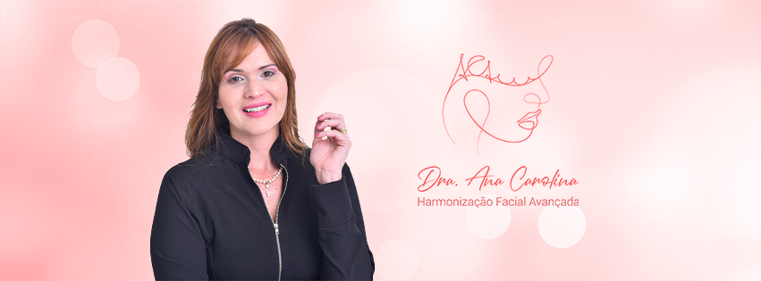
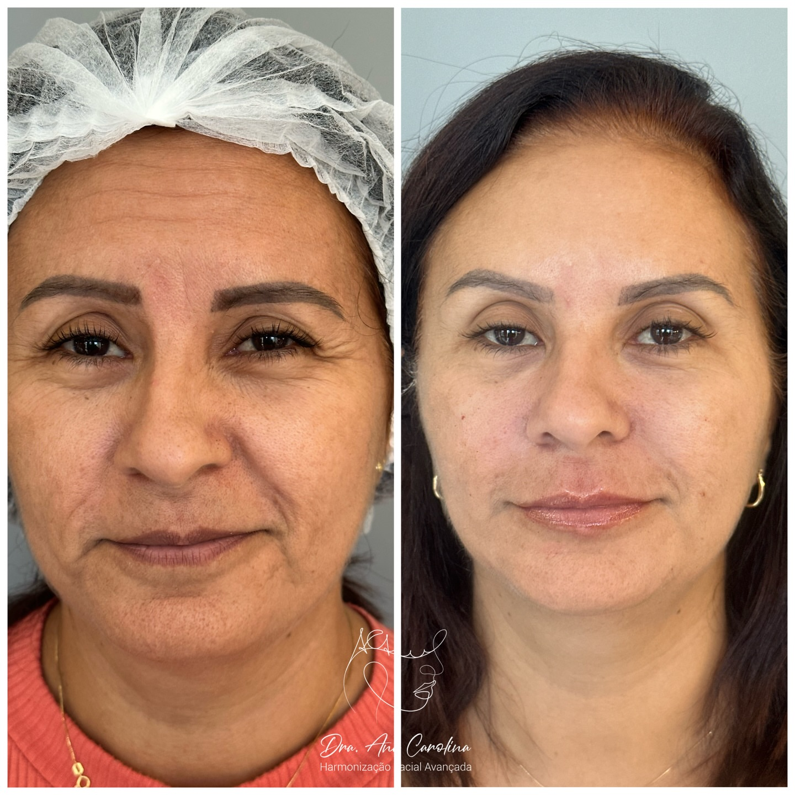
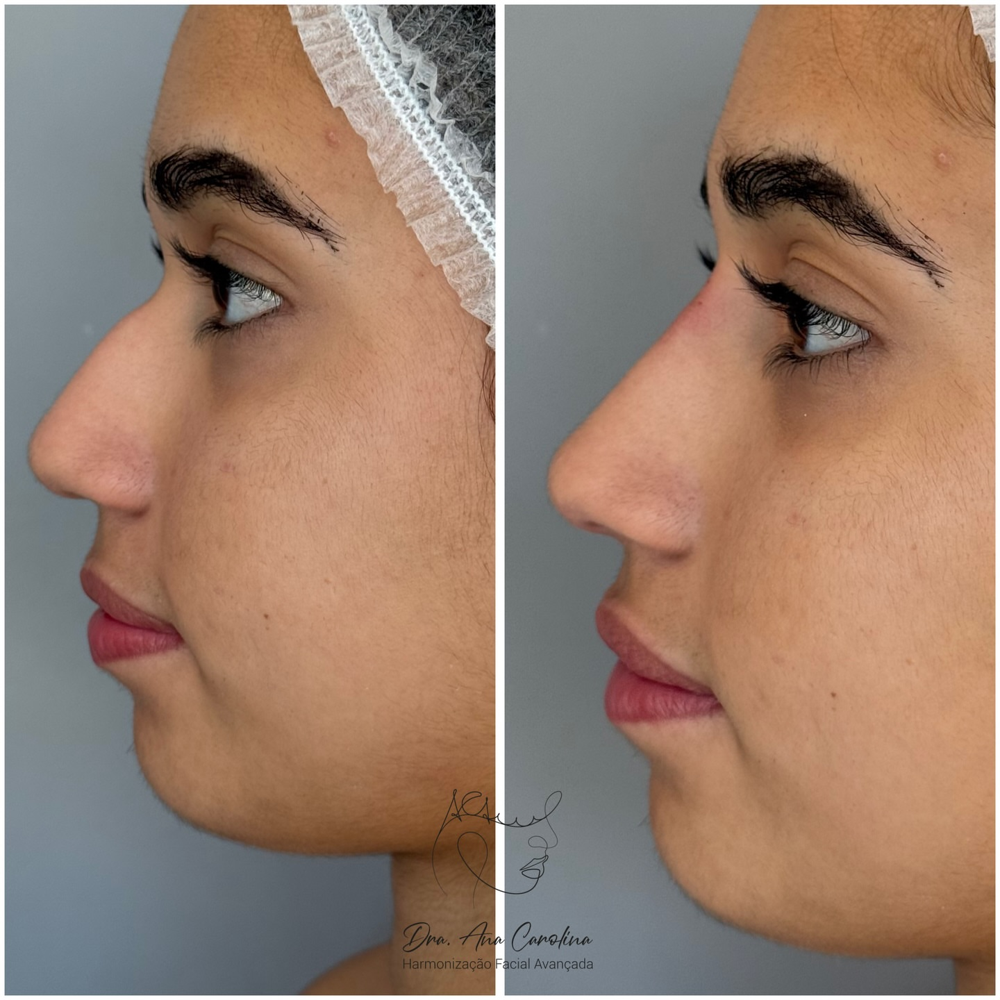
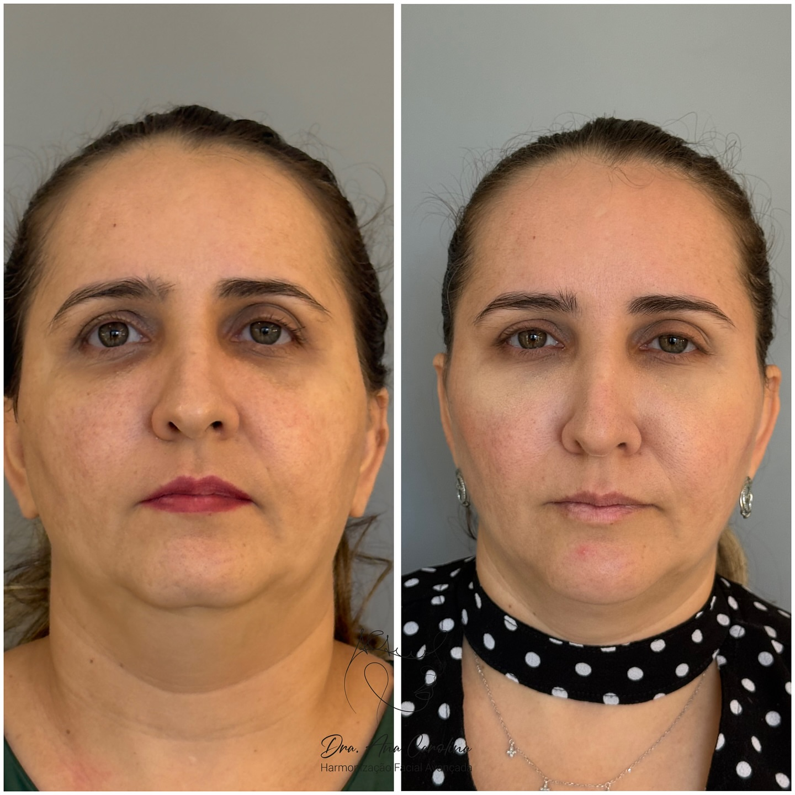
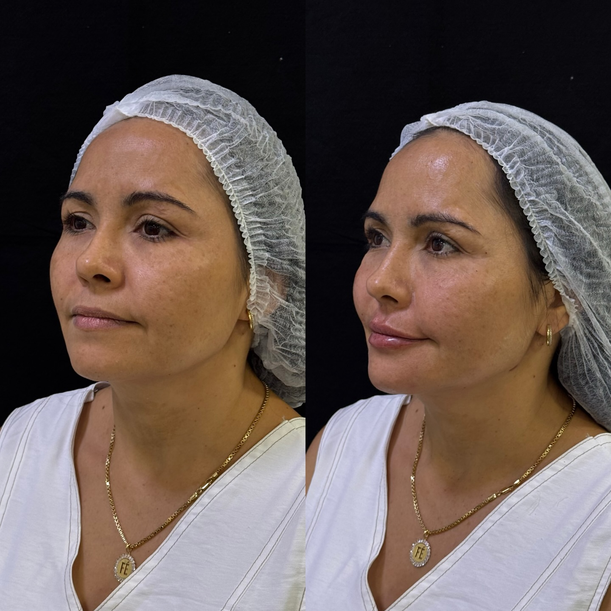

Preenchimento Labial
Lábios definidos, hidratados e com proporção natural. Volume na medida certa, sem aquele aspecto artificial.
Harmonização facial com naturalidade e precisão — realçar os seus traços, nunca apagá-los. Resultado que parece você, no seu melhor.

Na harmonização facial, técnica sem sensibilidade estética vira excesso. O trabalho da Dra. Ana Carolina nasce do oposto: estudar cada rosto, entender o que já é belo nele e potencializar — sem máscara, sem rigidez, sem aquele resultado igual em todo mundo.
Da rinomodelação ao preenchimento labial, do contorno de mandíbula ao rejuvenescimento com laser, cada protocolo é desenhado para o seu rosto. O resultado é simples de reconhecer: as pessoas notam que você está bem, mas não conseguem dizer exatamente o quê.
Cada procedimento começa por uma avaliação individual. Você só faz o que o seu rosto realmente pede.
Lábios definidos, hidratados e com proporção natural. Volume na medida certa, sem aquele aspecto artificial.
Harmonização do nariz sem cirurgia. Pequenos ajustes de ponta e dorso que reequilibram todo o perfil.
Definição do terço inferior e ângulo da face. Mais contorno, menos papada, traços mais elegantes.
Rejuvenescimento e textura de pele: estimula colágeno, suaviza linhas finas e devolve viço ao rosto.
Firmeza e sustentação do terço médio. Trabalha o colágeno para um efeito lifting gradual e durável.
Suaviza linhas de expressão preservando a naturalidade. Você continua expressando — só sem as marcas.
Casos reais de pacientes da clínica. A diferença está na sutileza — natural o suficiente para ninguém perceber o procedimento, só o resultado.




Imagens reais de pacientes — resultados podem variar conforme cada rosto e avaliação individual.
O objetivo nunca é "ficar feito". É ficar você — descansada, harmônica, no seu melhor. Menos é mais.
Nenhum protocolo de prateleira. Cada rosto é estudado antes de qualquer aplicação, com um plano só seu.
Produtos de procedência, ambiente próprio na clínica e mão experiente. Confiança em cada etapa.
A avaliação é o ponto de partida: entender o que você deseja e o que o seu rosto pede. A partir dela, desenhamos o protocolo ideal — com clareza, sem pressa e sem exageros.
Fale agora pelo WhatsApp e agende a sua avaliação de harmonização facial.
Chamar no WhatsApp @draanacarolinasantos